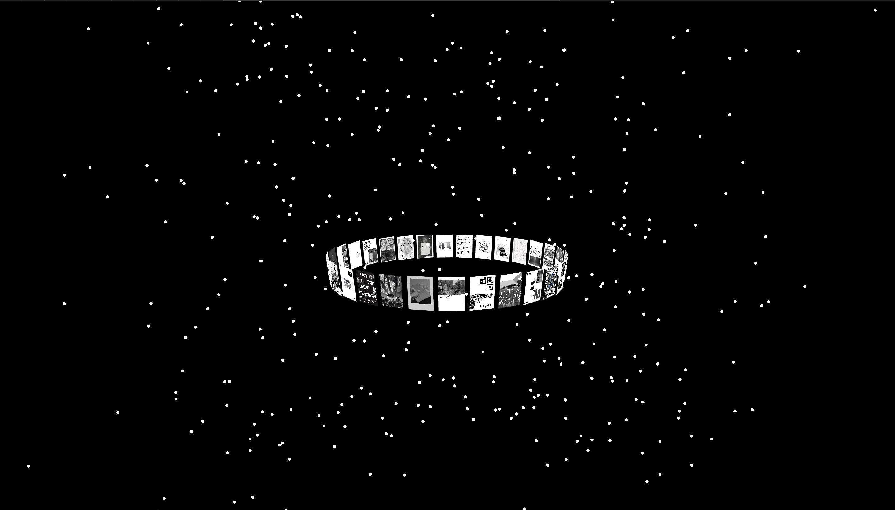
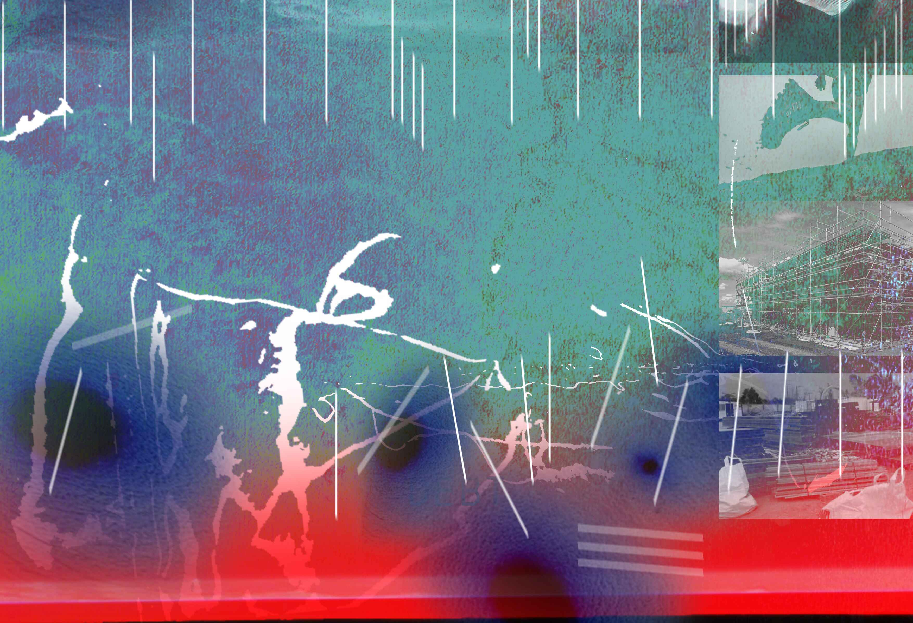
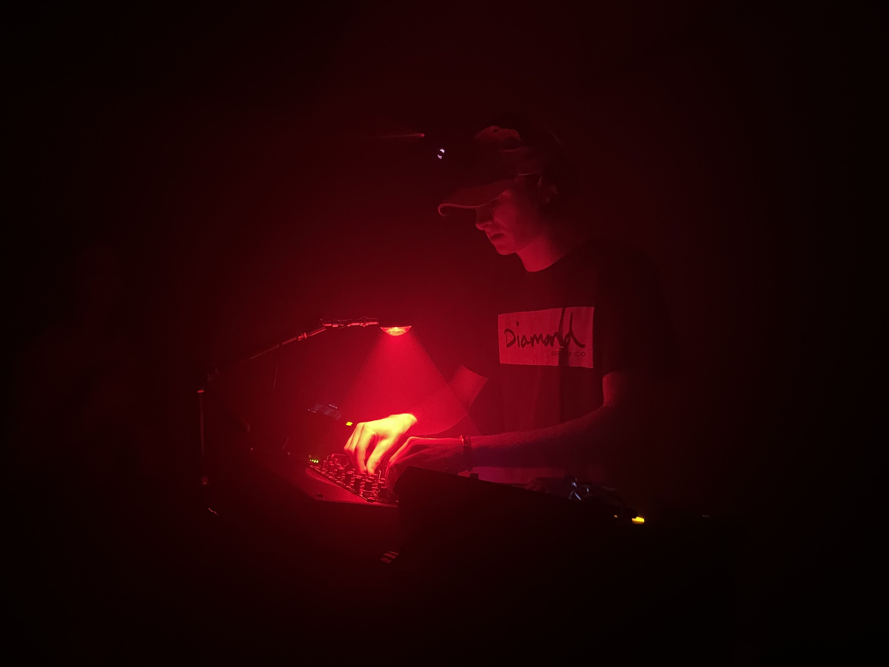
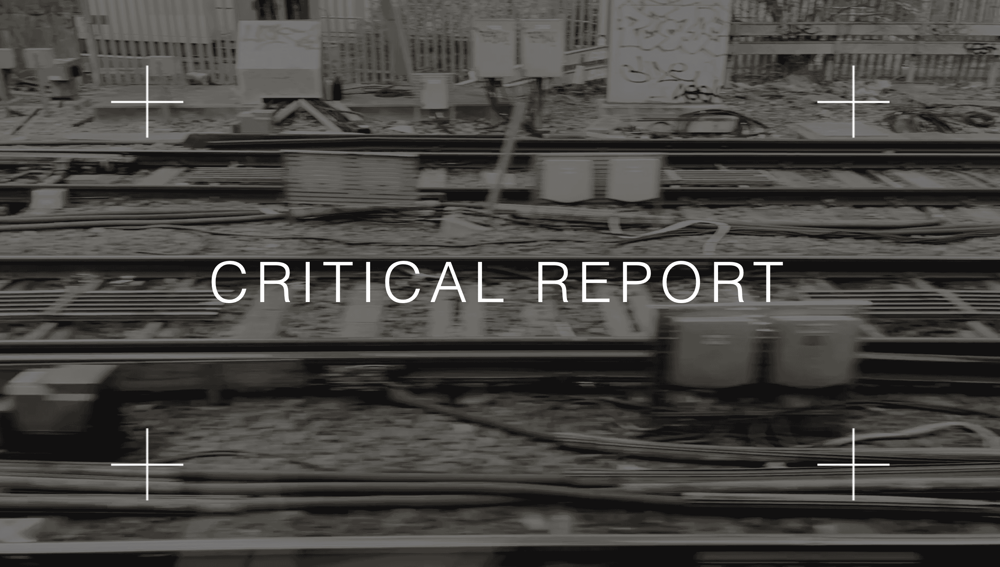
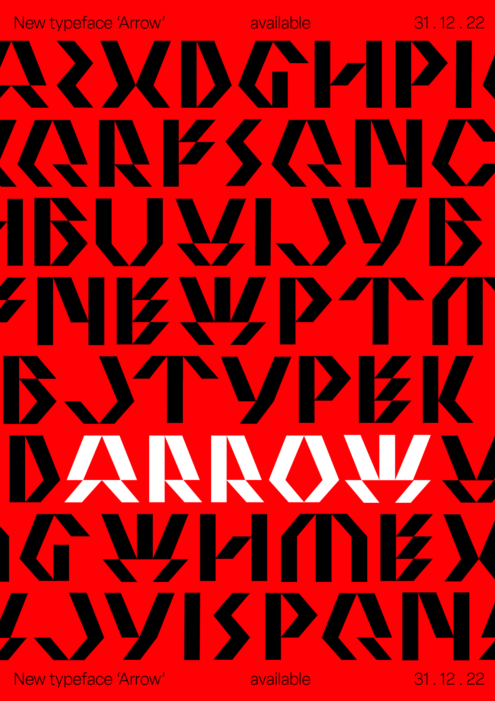
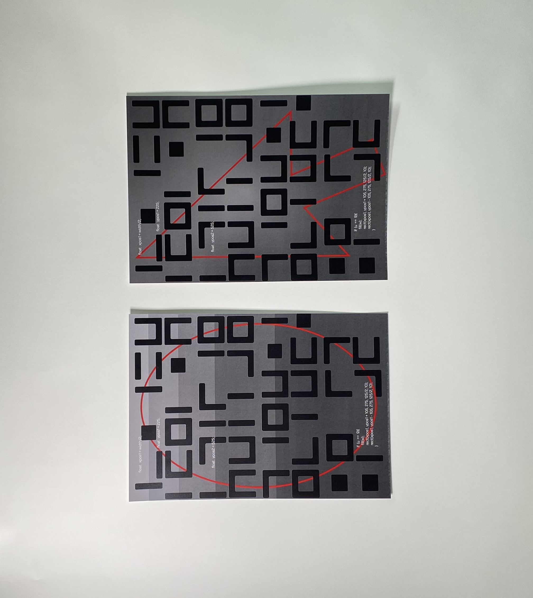
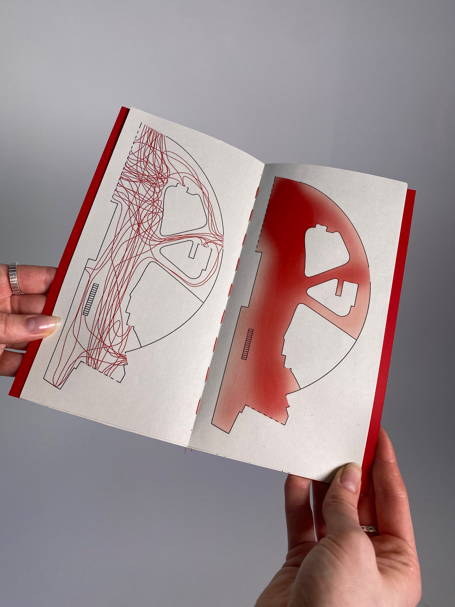
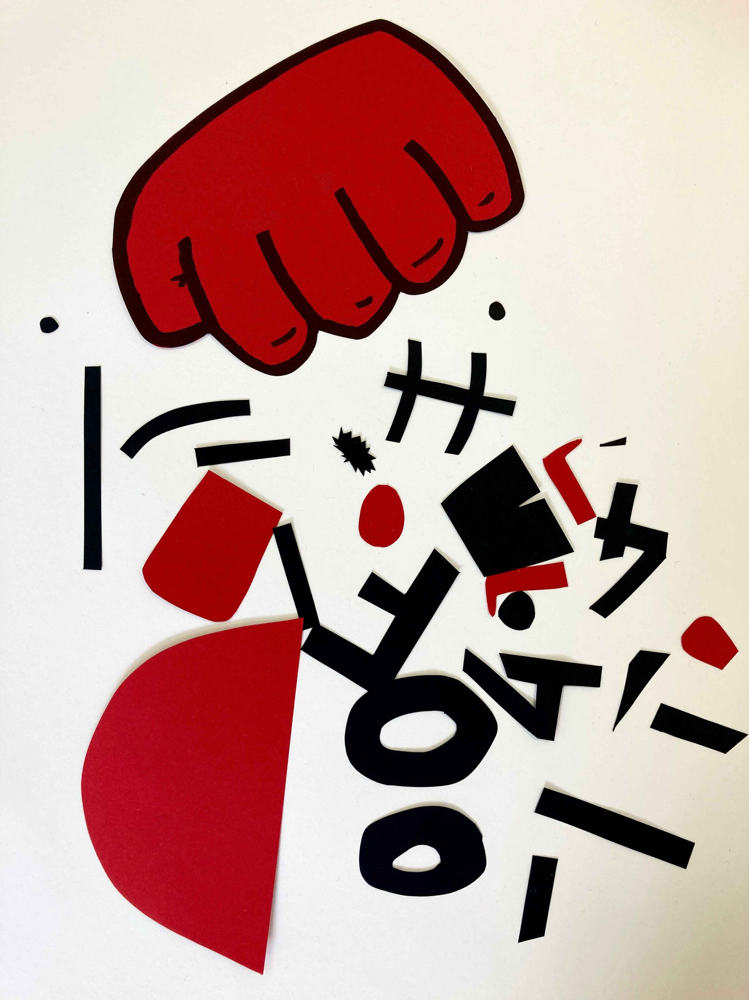
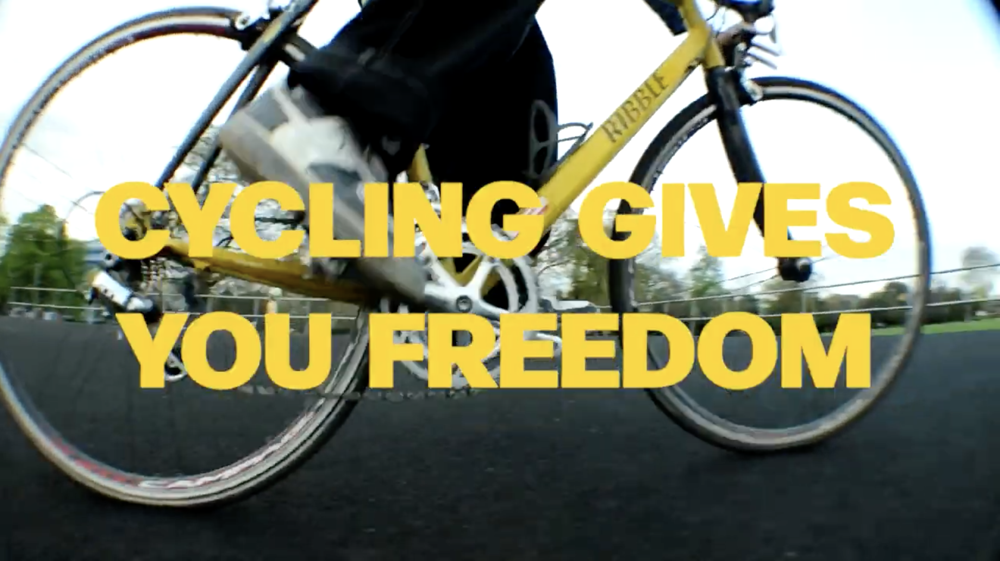

I'm a Designer based in London working with graphics and Sound, I'm especially interested in working with new technologies. My work spans many mediums including
Computation,
Photography,
Music (production and curation),
Typography,
Animation and
Film.

A project combining traditional and innovative publishing processes to explore what it means to 'publish'. The final outcome was a digital 3D space for the pages of a collective publication to be situated in.

A collaborative project between myself and a friend in Australia, using diagrams as a form of communication to produce music together.

Photos taken while visiting Borneo (Malaysia) and Bangkok (Thailand), capturing the beauty and chaos in the culture and scenery.

Links to radio shows and event recordings (photo taken from an event that a friend and I put on and played at Spanners Nighclub).

A writing Project to make a critical report of my current practice, influences and ideas, delivered in the form of a website.

Modular typeface and type specimens.

Experimental typeface and type specimens created using generative processes and coding.

'Move' - a Publication exploring data visualisation of foot traffic in public spaces in London.

'Oof' - A short stop-motion Animation developed from a screen print.

A film project promoting cycling and experimenting with 2 contrasting approaches to directing a short film.